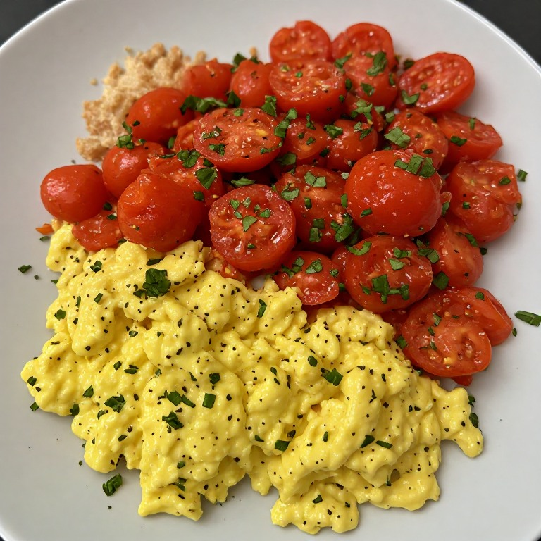

Stir-Fried Tomato and Egg

Description
This is a delicious and easy-to-make stir-fried dish featuring tomatoes and eggs.
Ingredients
- 2 tomatoes, diced
- 2 eggs
- 1 tablespoon of cooking oil(your preference)
Steps
- Scramble the eggs: Heat 1 tablespoon of oil in a pan over medium heat.
Pour in the beaten eggs and gently scramble until mostly set but still slightly runny.
Remove from the pan immediately to keep them soft, and set aside.
- Cook the tomatoes: Add the remaining oil to the pan over medium-high heat.
Add the white parts of the green onion and the tomato wedges.
Sauté for about 2 minutes until the tomatoes start to soften and release their juices.
- Build the sauce: Stir in the sugar, ketchup, and a splash of water (about 2-3 tablespoons)
if you want extra sauce. Let it simmer until the tomatoes break down into a nice,
jammy gravy.
- Combine and serve: Add the cooked eggs back into the pan.
Toss everything together for 30 seconds to heat the eggs through and coat them in the tomato sauce.
Turn off the heat, garnish with the green parts of the scallion, and serve over hot steamed rice.
Home